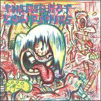
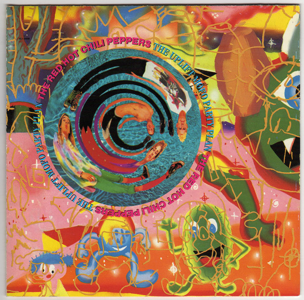
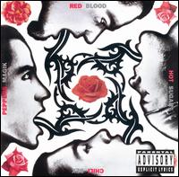
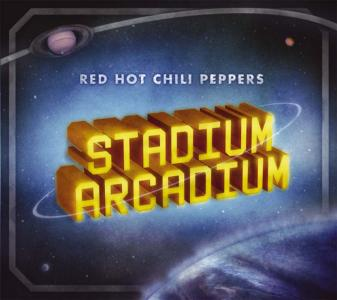

-
The Red Hot Chili Peppers (1984)
The Red Hot Chili Peppers is the debut studio album by American rock band Red Hot Chili Peppers, released on August 10, 1984 on EMI Records. The album was produced by Gang of Four guitarist Andy Gill, and is the only album to feature Jack Sherman on guitar. Sherman was in the band as a replacement for founding member Hillel Slovak, who had left the band along with founding drummer Jack Irons before the album was recorded. Shortly after the album was released, Sherman was fired and Slovak rejoined the band. The album also features founding members Anthony Kiedis on vocals and Flea on bass, as well as Cliff Martinez on drums.
-
 Freaky Styley (1985)
Freaky Styley (1985)Freaky Styley is the second studio album by American rock band Red Hot Chili Peppers, released on August 16, 1985 on EMI Records. The album name holds its origins in a commonly used phrase in the '80s to describe anything as being "freaky styley". Freaky Styley marks founding guitarist Hillel Slovak's studio album debut, following his return to the band earlier in the year. The album is also the last to feature drummer Cliff Martinez. Freaky Styley was produced by George Clinton, of Parliament-Funkadelic. "Jungle Man" and "Hollywood (Africa)" were released as the album's two singles while "Catholic School Girls Rule" and "Jungle Man" both had music videos made for the songs.
-
The Uplift Mofo Party Plan (1987)
The Uplift Mofo Party Plan is the third studio album by American rock band Red Hot Chili Peppers, released on September 29, 1987 by EMI Records. Due to prior obligations resulting in temporary personnel changes following the band's formation in 1983, The Uplift Mofo Party Plan is the only studio album to feature all four founding members of the band on every single track: vocalist Anthony Kiedis, bassist Flea, guitarist Hillel Slovak, and drummer Jack Irons. "Fight Like a Brave" was released as the album's only single however "Me and My Friends" received minor radio airplay even though it was never released as a single. In 1992, "Behind the Sun" was released as a single and music video to promote What Hits!?.
-
 Mother's Milk (1989)
Mother's Milk (1989)Mother's Milk is the fourth studio album by American rock band Red Hot Chili Peppers, released on August 16, 1989 by EMI Records. After the death of founding guitarist Hillel Slovak and the subsequent departure of drummer Jack Irons, vocalist Anthony Kiedis and bassist Flea regrouped with the addition of guitarist John Frusciante and drummer Chad Smith. Frusciante's influence altered the band's sound by placing more emphasis on melody than rhythm, which had dominated the band's previous material. Returning producer Michael Beinhorn favored heavy metal guitar riffs, as well as overdubbing perceived by Frusciante as excessive, and as a result, Beinhorn and Frusciante constantly fought over the album's guitar sound.
-
Blood Sugar Sex Magik (1991)
Blood Sugar Sex Magik is the fifth studio album by American rock band Red Hot Chili Peppers, released on September 24, 1991 by Warner Bros. Records. Produced by Rick Rubin, its musical style differed notably from the techniques employed on the band's previous album Mother's Milk (1989), and featured minimal use of heavy metal guitar riffs. The album's subject matter incorporates sexual innuendos and references to drugs and death, as well as themes of lust and exuberance.
-
One Hot Minute (1995)
One Hot Minute is the sixth studio album by American rock band Red Hot Chili Peppers, released on September 12, 1995 by Warner Bros. Records. The worldwide success of the band's previous album Blood Sugar Sex Magik (1991) caused guitarist John Frusciante to become uncomfortable with their status, eventually quitting mid-tour in 1992. Vocalist Anthony Kiedis, who had resumed addictions to cocaine and heroin in 1994 after being sober for more than five years, approached his lyricism with a reflective outlook on drugs and their harsh effects. It is the only studio album to feature Dave Navarro as the band's lead guitarist, who had joined the band in 1993 after a series of short-term replacements for Frusciante. Drummer Chad Smith and founding bassist Flea round out the main band personnel. The album was produced by Rick Rubin, who also produced their prior album.
-
 Californication (1999)
Californication (1999)Californication is the seventh studio album by American rock band Red Hot Chili Peppers. It was released on June 8, 1999, on Warner Bros. Records and was produced by Rick Rubin. Californication marked the return of John Frusciante, who had previously appeared on Mother's Milk and Blood Sugar Sex Magik, to replace Dave Navarro as the band's guitarist. Frusciante's return was credited with changing the band's sound altogether, producing a notable shift in style from the music recorded with Navarro. The album's subject material incorporated various sexual innuendos commonly associated with the band, but also contained more varied themes than previous outings, including death, contemplations of suicide, California, drugs, globalization, and travel.
-
 By the Way (2002)
By the Way (2002)By the Way is the eighth studio album by American rock band Red Hot Chili Peppers. The album was released July 9, 2002 on Warner Bros. Records. It sold more than 286,000 copies in the first week, and peaked at number two on the Billboard 200 (their next album would peak at number one). Singles from the album included "By the Way," "The Zephyr Song," "Can't Stop," "Dosed" and "Universally Speaking." The lyrical subject matter vocalist Anthony Kiedis addresses in By the Way is a divergence from previous Chili Peppers albums, with Kiedis taking a more candid and reflective approach to his lyrics.
-
Stadium Arcadium (2006)
Stadium Arcadium is the ninth studio album by American rock band Red Hot Chili Peppers. The album was released on May 9, 2006, on Warner Bros. Records. The album produced five singles: "Dani California", "Tell Me Baby", "Snow (Hey Oh)", "Desecration Smile", and "Hump de Bump" along with the first ever fan made music video for the song, "Charlie". In the U.S., Stadium Arcadium became the band's first number one selling album. According to the band's vocalist Anthony Kiedis, Stadium Arcadium was originally scheduled to be a trilogy of albums each released six months apart, but was eventually condensed into a double album. The album is also the group's last to feature guitarist John Frusciante, who confirmed his departure from the band in 2009.
-
 I'm with You (2011)
I'm with You (2011)I'm with You is the tenth studio album by the American rock band Red Hot Chili Peppers. The album was released by Warner Bros. Records on August 26 in Europe and on August 29 in the US. The album made its debut at number one in 18 countries including the United Kingdom, while reaching number two in the United States and Canada. Produced by Rick Rubin, I'm with You was the band's first studio album since 2006's Stadium Arcadium, and its first to feature guitarist Josh Klinghoffer, following the departure of John Frusciante in 2009.
-
 The Getaway (2016)
The Getaway (2016)The Getaway is the eleventh studio album by American rock band Red Hot Chili Peppers, released through Warner Bros. on June 17, 2016. This is the band's first studio album since 2011's I'm with You. It was produced by Danger Mouse, who replaced Rick Rubin after twenty-five years and six albums as the band's producer. The Getaway made its debut at number one in ten different countries while reaching number two in the band's home country of the United States along with the United Kingdom and Canada. Since its release, the album has received mostly favorable reviews.